FAIL
2026-10-07 09:34:18 · позиций 72 · FAIL 37 · аномалий вне деталей 0 · невязка фидуциалов 0.034950518179774924 мм · ECC 0.9943
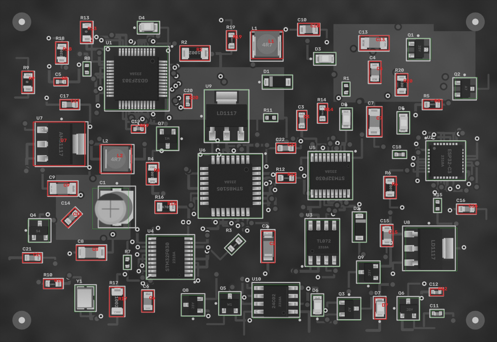
Кроп: живая плата (выровнена) | эталон (жёлтое — метка полярности,
синее — место метки при 180°) | карта отклонений σ.
MISSING — корпус не найден; MISMATCH — на месте не то, что в эталоне (голые площадки, другая деталь,
повреждение); POLARITY — развёрнута на 180° / метка не там; SHIFT / ROTATED — вне допуска;
ANOMALY — локальное отклонение от golden (мост, шарик, лишний припой, посторонний предмет).
| C10 22p · 0805 | FAIL MISMATCH | 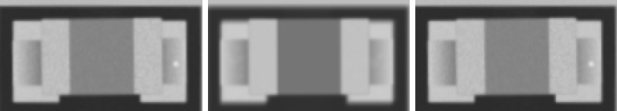 ncc 0.979 · ncc_thr 0.6 · mad 10.3 · mad_thr 7.8 · dx_mm 0.0 · dy_mm 0.0 · dtheta_deg -0.0 · anomaly_px 0 |
| C12 4u7 · 0402 | FAIL MISMATCH | 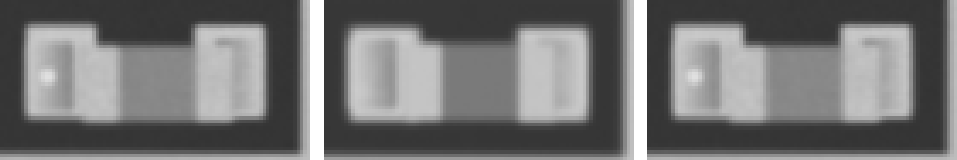 ncc 0.969 · ncc_thr 0.6 · mad 9.5 · mad_thr 8.6 · dx_mm 0.0 · dy_mm 0.023 · dtheta_deg -0.0 · anomaly_px 0 |
| C13 100n · 1206 | FAIL MISMATCH | 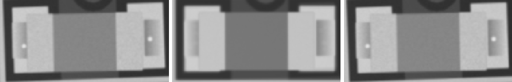 ncc 0.957 · ncc_thr 0.6 · mad 10.5 · mad_thr 7.5 · dx_mm -0.023 · dy_mm 0.023 · dtheta_deg -2 · anomaly_px 0 |
| C14 100n · 0603 | FAIL MISMATCH | 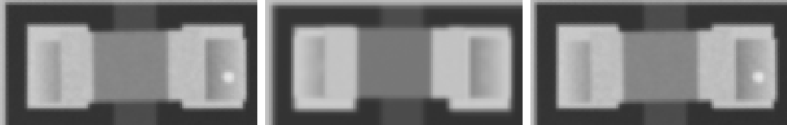 ncc 0.946 · ncc_thr 0.6 · mad 10.6 · mad_thr 8.1 · dx_mm 0.023 · dy_mm 0.023 · dtheta_deg -0.0 · anomaly_px 0 |
| C15 10u · 0805 | FAIL MISMATCH | 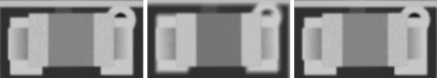 ncc 0.958 · ncc_thr 0.6 · mad 10.9 · mad_thr 7.9 · dx_mm -0.023 · dy_mm -0.07 · dtheta_deg -0.0 · anomaly_px 0 |
| C16 4u7 · 0603 | FAIL MISMATCH | 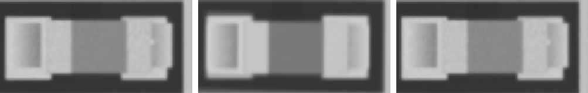 ncc 0.938 · ncc_thr 0.6 · mad 10.8 · mad_thr 8.1 · dx_mm 0.047 · dy_mm -0.023 · dtheta_deg -0.0 · anomaly_px 0 |
| C17 10u · 0603 | FAIL MISMATCH | 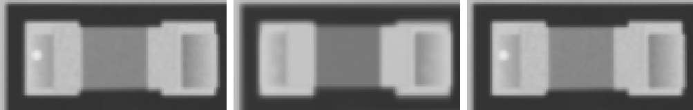 ncc 0.97 · ncc_thr 0.6 · mad 10.2 · mad_thr 8.1 · dx_mm 0.023 · dy_mm 0.0 · dtheta_deg -0.0 · anomaly_px 0 |
| C19 1u · 0402 | FAIL MISMATCH | 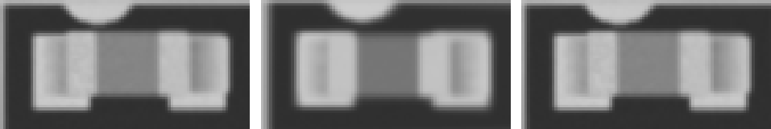 ncc 0.952 · ncc_thr 0.6 · mad 10.0 · mad_thr 9.1 · dx_mm 0.023 · dy_mm -0.023 · dtheta_deg -0.0 · anomaly_px 0 |
| C2 Tantalum_Case-A · Tantalum_Case-A | FAIL MISMATCH | 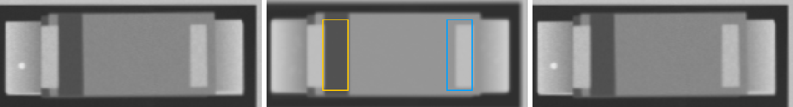 ncc 0.984 · ncc_thr 0.6 · ncc_180 0.585 · mad 11.4 · mad_thr 7.4 · mad_180 28.5 · dx_mm -0.023 · dy_mm -0.047 · dtheta_deg -0.0 · anomaly_px 0 |
| C20 22p · 0402 | FAIL MISMATCH | 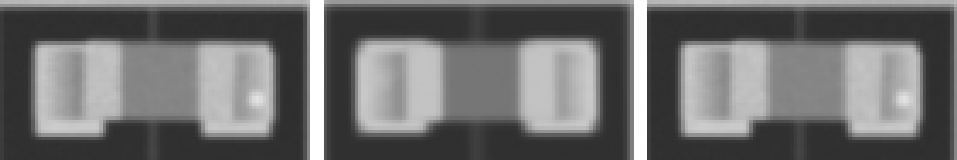 ncc 0.961 · ncc_thr 0.6 · mad 10.8 · mad_thr 9.4 · dx_mm 0.0 · dy_mm -0.023 · dtheta_deg -0.0 · anomaly_px 0 |
| C21 22p · 0603 | FAIL MISMATCH | 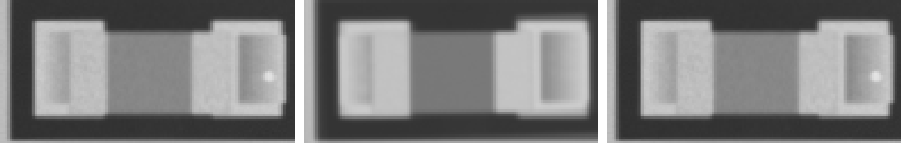 ncc 0.976 · ncc_thr 0.6 · mad 10.1 · mad_thr 8.2 · dx_mm 0.023 · dy_mm 0.0 · dtheta_deg -0.0 · anomaly_px 0 |
| C22 4u7 · 0603 | FAIL MISMATCH | 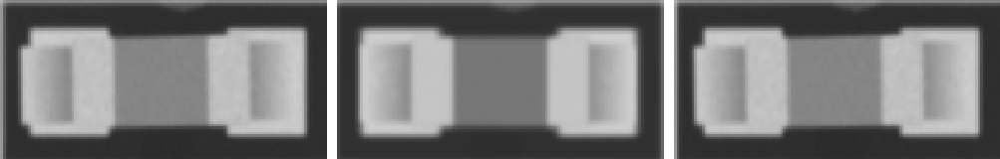 ncc 0.958 · ncc_thr 0.6 · mad 11.0 · mad_thr 8.3 · dx_mm -0.047 · dy_mm 0.0 · dtheta_deg -0.0 · anomaly_px 0 |
| C3 10u · 0603 | FAIL MISMATCH | 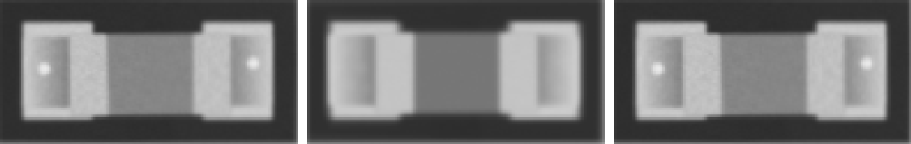 ncc 0.969 · ncc_thr 0.6 · mad 10.4 · mad_thr 8.2 · dx_mm 0.0 · dy_mm 0.0 · dtheta_deg -0.0 · anomaly_px 0 |
| C4 1u · 0805 | FAIL MISMATCH | 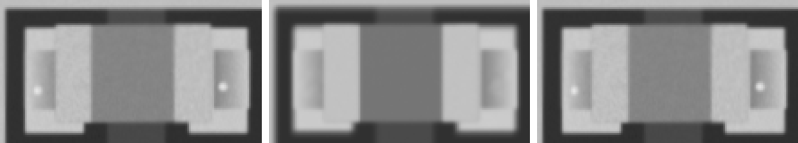 ncc 0.979 · ncc_thr 0.6 · mad 10.1 · mad_thr 7.7 · dx_mm 0.0 · dy_mm -0.023 · dtheta_deg -0.0 · anomaly_px 0 |
| C5 4u7 · 0402 | FAIL MISMATCH | 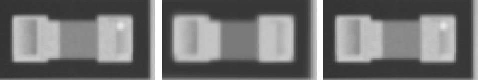 ncc 0.973 · ncc_thr 0.6 · mad 10.0 · mad_thr 8.9 · dx_mm 0.0 · dy_mm 0.0 · dtheta_deg -0.0 · anomaly_px 0 |
| C6 4u7 · 0805 | FAIL MISMATCH | 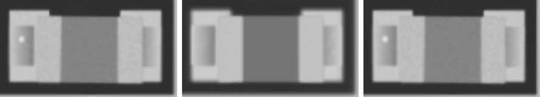 ncc 0.979 · ncc_thr 0.6 · mad 10.2 · mad_thr 8.0 · dx_mm 0.0 · dy_mm 0.0 · dtheta_deg -0.0 · anomaly_px 0 |
| C7 10u · 1206 | FAIL MISMATCH | 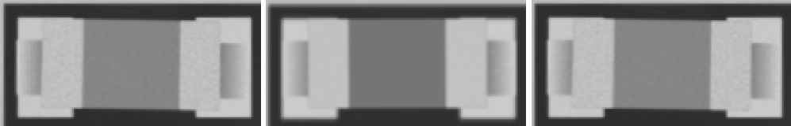 ncc 0.962 · ncc_thr 0.6 · mad 11.0 · mad_thr 7.5 · dx_mm -0.023 · dy_mm 0.023 · dtheta_deg -0.0 · anomaly_px 0 |
| C8 4u7 · 1206 | FAIL MISMATCH | 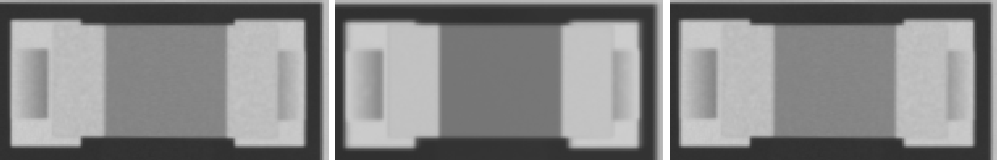 ncc 0.979 · ncc_thr 0.6 · mad 10.5 · mad_thr 7.6 · dx_mm 0.0 · dy_mm 0.023 · dtheta_deg -0.0 · anomaly_px 0 |
| C9 4u7 · 1206 | FAIL MISMATCH | 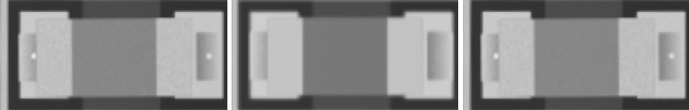 ncc 0.97 · ncc_thr 0.6 · mad 10.4 · mad_thr 7.6 · dx_mm -0.023 · dy_mm 0.0 · dtheta_deg -0.0 · anomaly_px 0 |
| D7 LED_0805 · LED_0805 | FAIL POLARITY | 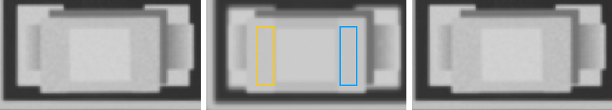 ncc 0.988 · ncc_thr 0.6 · ncc_180 0.784 · mad 4.5 · mad_thr 7.3 · mad_180 11.4 · mark_ncc -0.032 · mark_ncc_180 0.144 · dx_mm 0.093 · dy_mm 0.047 · dtheta_deg -0.0 · anomaly_px 0 |
| L1 4u7 · L_4x4 | FAIL MISMATCH | 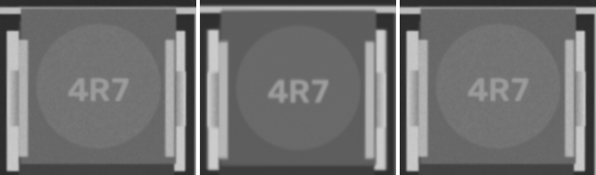 ncc 0.922 · ncc_thr 0.6 · mad 9.9 · mad_thr 7.4 · dx_mm 0.023 · dy_mm -0.023 · dtheta_deg -0.0 · anomaly_px 0 |
| L2 4u7 · L_4x4 | FAIL MISMATCH | 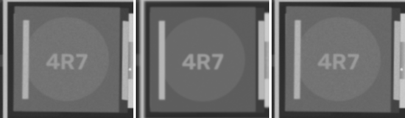 ncc 0.973 · ncc_thr 0.6 · mad 9.6 · mad_thr 7.4 · dx_mm 0.047 · dy_mm -0.023 · dtheta_deg -0.0 · anomaly_px 0 |
| R10 1k · 0603 | FAIL MISMATCH | 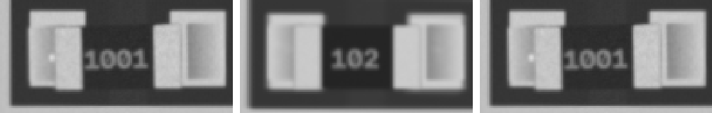 ncc 0.969 · ncc_thr 0.6 · mad 12.9 · mad_thr 10.7 · dx_mm -0.023 · dy_mm 0.047 · dtheta_deg -0.0 · anomaly_px 0 |
| R12 10k · 0603 | FAIL MISMATCH | 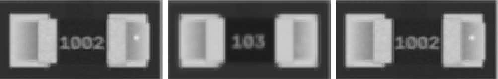 ncc 0.971 · ncc_thr 0.6 · mad 13.5 · mad_thr 12.7 · dx_mm 0.047 · dy_mm 0.0 · dtheta_deg -0.0 · anomaly_px 0 |
| R13 0R · 0805 | FAIL MISMATCH | 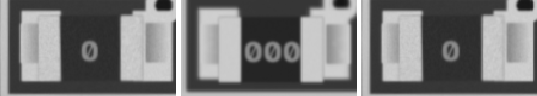 ncc 0.949 · ncc_thr 0.6 · mad 15.1 · mad_thr 9.5 · dx_mm -0.07 · dy_mm -0.047 · dtheta_deg -0.0 · anomaly_px 0 |
| R14 4k7 · 0603 | FAIL MISMATCH | 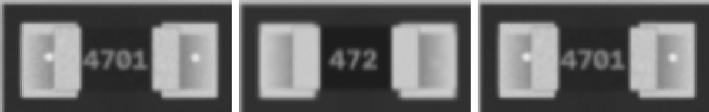 ncc 0.974 · ncc_thr 0.6 · mad 13.8 · mad_thr 10.7 · dx_mm 0.0 · dy_mm 0.0 · dtheta_deg -0.0 · anomaly_px 0 |
| R16 4k7 · 0805 | FAIL MISMATCH | 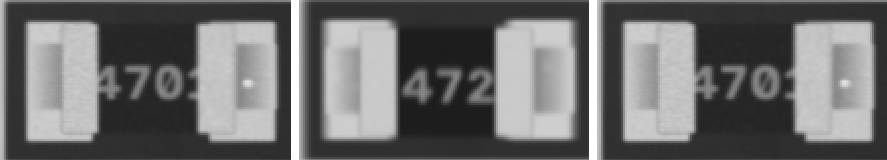 ncc 0.947 · ncc_thr 0.6 · mad 16.5 · mad_thr 14.2 · dx_mm 0.0 · dy_mm -0.023 · dtheta_deg -0.0 · anomaly_px 0 |
| R17 10k · 1206 | FAIL MISMATCH | 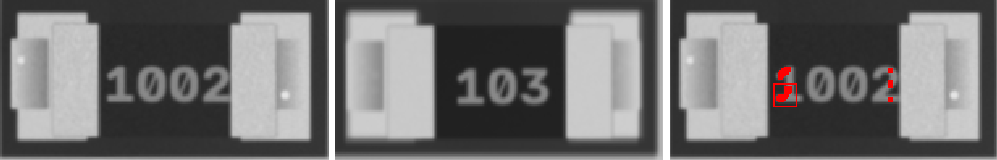 ncc 0.946 · ncc_thr 0.6 · mad 17.2 · mad_thr 8.9 · dx_mm -0.07 · dy_mm -0.023 · dtheta_deg -0.0 · anomaly_px 56 |
| R18 220 · 0805 | FAIL MISMATCH | 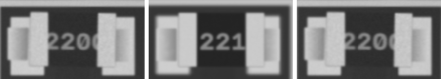 ncc 0.95 · ncc_thr 0.6 · mad 16.2 · mad_thr 8.8 · dx_mm -0.07 · dy_mm -0.023 · dtheta_deg -0.0 · anomaly_px 0 |
| R19 220 · 0603 | FAIL MISMATCH | 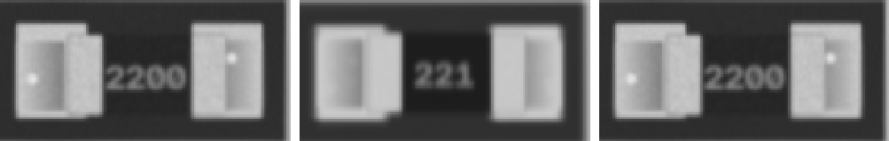 ncc 0.968 · ncc_thr 0.6 · mad 14.2 · mad_thr 12.4 · dx_mm 0.0 · dy_mm 0.023 · dtheta_deg -0.0 · anomaly_px 0 |
| R2 10k · 1206 | FAIL MISMATCH | 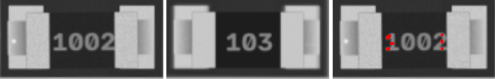 ncc 0.951 · ncc_thr 0.6 · mad 16.8 · mad_thr 8.9 · dx_mm -0.023 · dy_mm 0.0 · dtheta_deg -0.0 · anomaly_px 0 |
| R20 1k · 0805 | FAIL MISMATCH | 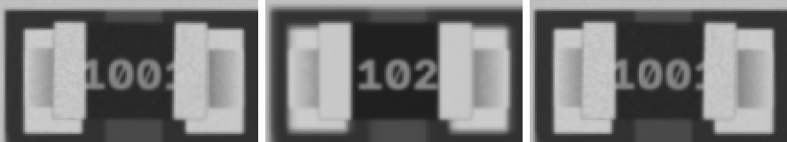 ncc 0.953 · ncc_thr 0.6 · mad 15.6 · mad_thr 8.7 · dx_mm 0.0 · dy_mm -0.023 · dtheta_deg -0.0 · anomaly_px 0 |
| R4 100k · 0805 | FAIL MISMATCH | 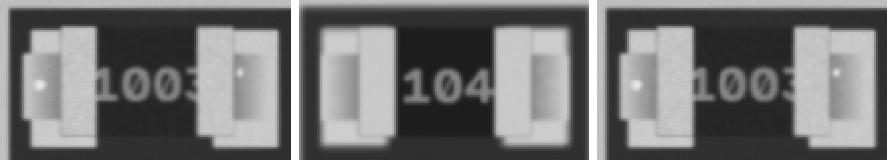 ncc 0.949 · ncc_thr 0.6 · mad 16.1 · mad_thr 9.4 · dx_mm -0.093 · dy_mm -0.023 · dtheta_deg -0.0 · anomaly_px 0 |
| R5 220 · 0603 | FAIL MISMATCH | 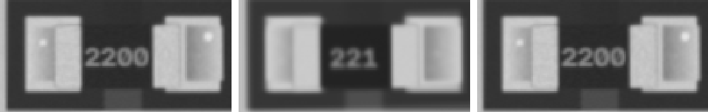 ncc 0.972 · ncc_thr 0.6 · mad 12.9 · mad_thr 11.9 · dx_mm 0.023 · dy_mm 0.0 · dtheta_deg -0.0 · anomaly_px 0 |
| R6 10k · 0805 | FAIL MISMATCH | 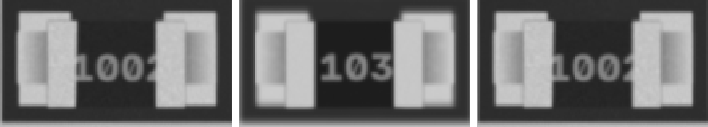 ncc 0.954 · ncc_thr 0.6 · mad 16.1 · mad_thr 9.7 · dx_mm 0.0 · dy_mm 0.0 · dtheta_deg -0.0 · anomaly_px 0 |
| R9 0R · 0805 | FAIL MISMATCH | 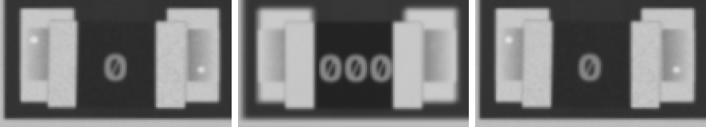 ncc 0.957 · ncc_thr 0.6 · mad 14.9 · mad_thr 9.4 · dx_mm 0.0 · dy_mm 0.0 · dtheta_deg -0.0 · anomaly_px 0 |
| U7 AMS1117 · SOT-223 | FAIL MISMATCH | 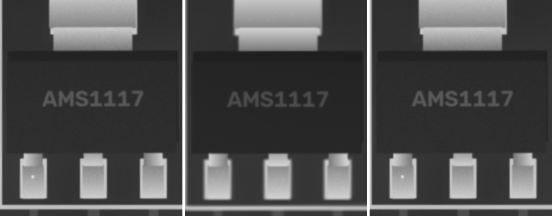 ncc 0.976 · ncc_thr 0.6 · ncc_180 0.55 · mad 7.4 · mad_thr 7.0 · mad_180 47.0 · dx_mm -0.023 · dy_mm 0.047 · dtheta_deg -0.0 · anomaly_px 0 |
| C1 100u · CP_Elec_5x5.8 | PASS | ncc 0.995 · ncc_thr 0.6 · ncc_180 0.511 · mad 3.9 · mad_thr 7.9 · mad_180 27.9 · mark_ncc 0.995 · mark_ncc_180 -0.282 · dx_mm 0.047 · dy_mm 0.023 · dtheta_deg -0.0 · anomaly_px 0 |
| C11 22p · 0402 | PASS | ncc 0.975 · ncc_thr 0.6 · mad 9.2 · mad_thr 9.7 · dx_mm 0.023 · dy_mm 0.023 · dtheta_deg -0.0 · anomaly_px 0 |
| C18 100n · 0402 | PASS | ncc 0.971 · ncc_thr 0.6 · mad 9.1 · mad_thr 9.6 · dx_mm 0.0 · dy_mm 0.0 · dtheta_deg -0.0 · anomaly_px 0 |
| D1 SOD-123 · SOD-123 | PASS | ncc 0.997 · ncc_thr 0.6 · ncc_180 0.773 · mad 5.5 · mad_thr 7.0 · mad_180 14.2 · mark_ncc 0.989 · mark_ncc_180 0.079 · dx_mm -0.07 · dy_mm 0.023 · dtheta_deg -0.0 · anomaly_px 0 |
| D2 SOD-123 · SOD-123 | PASS | ncc 0.981 · ncc_thr 0.6 · ncc_180 0.734 · mad 5.7 · mad_thr 7.2 · mad_180 13.5 · mark_ncc 0.745 · mark_ncc_180 -0.029 · dx_mm -0.023 · dy_mm 0.0 · dtheta_deg -0.0 · anomaly_px 0 |
| D3 LED_0805 · LED_0805 | PASS | ncc 0.982 · ncc_thr 0.6 · ncc_180 0.849 · mad 5.1 · mad_thr 7.5 · mad_180 6.4 · mark_ncc 0.083 · mark_ncc_180 -0.11 · dx_mm 0.023 · dy_mm 0.047 · dtheta_deg -0.0 · anomaly_px 0 |
| D4 LED_0805 · LED_0805 | PASS | ncc 0.978 · ncc_thr 0.6 · ncc_180 0.783 · mad 4.5 · mad_thr 7.5 · mad_180 13.1 · mark_ncc 0.089 · mark_ncc_180 -0.138 · dx_mm -0.07 · dy_mm -0.047 · dtheta_deg -0.0 · anomaly_px 0 |
| D5 LED_0805 · LED_0805 | PASS | ncc 0.978 · ncc_thr 0.6 · ncc_180 0.806 · mad 4.9 · mad_thr 7.6 · mad_180 5.5 · mark_ncc -0.026 · mark_ncc_180 -0.062 · dx_mm 0.093 · dy_mm 0.047 · dtheta_deg -0.0 · anomaly_px 0 |
| D6 LED_0805 · LED_0805 | PASS | ncc 0.975 · ncc_thr 0.6 · ncc_180 0.817 · mad 5.0 · mad_thr 7.4 · mad_180 7.8 · mark_ncc 0.024 · mark_ncc_180 0.069 · dx_mm -0.047 · dy_mm 0.0 · dtheta_deg -0.0 · anomaly_px 0 |
| D8 LED_0805 · LED_0805 | PASS | ncc 0.987 · ncc_thr 0.6 · ncc_180 0.823 · mad 5.0 · mad_thr 7.3 · mad_180 5.8 · mark_ncc 0.105 · mark_ncc_180 0.058 · dx_mm 0.0 · dy_mm 0.023 · dtheta_deg -0.0 · anomaly_px 0 |
| Q1 J3Y · SOT-23 | PASS | ncc 0.949 · ncc_thr 0.6 · ncc_180 0.71 · mad 6.7 · mad_thr 7.5 · mad_180 46.8 · dx_mm -0.023 · dy_mm -0.07 · dtheta_deg -0.0 · anomaly_px 0 |
| Q2 A7 · SOT-23 | PASS | ncc 0.982 · ncc_thr 0.6 · ncc_180 0.839 · mad 6.9 · mad_thr 7.2 · mad_180 28.7 · dx_mm -0.023 · dy_mm 0.023 · dtheta_deg -0.0 · anomaly_px 0 |
| Q3 A7 · SOT-23 | PASS | ncc 0.988 · ncc_thr 0.6 · ncc_180 0.835 · mad 6.0 · mad_thr 7.3 · mad_180 33.6 · dx_mm 0.0 · dy_mm 0.0 · dtheta_deg -0.0 · anomaly_px 0 |
| Q4 S4 · SOT-23 | PASS | ncc 0.983 · ncc_thr 0.6 · ncc_180 0.671 · mad 6.3 · mad_thr 7.2 · mad_180 8.2 · dx_mm -0.023 · dy_mm 0.023 · dtheta_deg -0.0 · anomaly_px 0 |
| Q5 W1 · SOT-23 | PASS | ncc 0.985 · ncc_thr 0.6 · ncc_180 0.688 · mad 6.7 · mad_thr 7.4 · mad_180 39.2 · dx_mm 0.0 · dy_mm -0.023 · dtheta_deg -0.0 · anomaly_px 0 |
| Q6 J3Y · SOT-23 | PASS | ncc 0.961 · ncc_thr 0.6 · ncc_180 0.626 · mad 6.6 · mad_thr 7.9 · mad_180 30.0 · dx_mm 0.0 · dy_mm 0.0 · dtheta_deg -0.0 · anomaly_px 0 |
| Q7 W1 · SOT-23 | PASS | ncc 0.974 · ncc_thr 0.6 · ncc_180 0.58 · mad 6.7 · mad_thr 7.5 · mad_180 50.6 · dx_mm 0.0 · dy_mm -0.023 · dtheta_deg -0.0 · anomaly_px 0 |
| Q8 J3Y · SOT-23 | PASS | ncc 0.966 · ncc_thr 0.6 · ncc_180 0.741 · mad 6.9 · mad_thr 7.5 · mad_180 28.7 · dx_mm 0.0 · dy_mm 0.0 · dtheta_deg -0.0 · anomaly_px 0 |
| Q9 J3Y · SOT-23 | PASS | ncc 0.975 · ncc_thr 0.6 · ncc_180 0.686 · mad 6.3 · mad_thr 7.4 · mad_180 32.6 · dx_mm 0.0 · dy_mm 0.0 · dtheta_deg -0.0 · anomaly_px 0 |
| R1 10k · 0402 | PASS | ncc 0.965 · ncc_thr 0.6 · mad 9.8 · mad_thr 12.4 · dx_mm 0.0 · dy_mm 0.047 · dtheta_deg 2 · anomaly_px 0 |
| R11 220 · 0402 | PASS | ncc 0.99 · ncc_thr 0.6 · mad 7.3 · mad_thr 9.8 · dx_mm 0.047 · dy_mm 0.0 · dtheta_deg -0.0 · anomaly_px 0 |
| R15 4k7 · 0402 | PASS | ncc 0.98 · ncc_thr 0.6 · mad 8.1 · mad_thr 10.0 · dx_mm -0.023 · dy_mm 0.047 · dtheta_deg -0.0 · anomaly_px 0 |
| R3 1k · 0603 | PASS | ncc 0.98 · ncc_thr 0.6 · mad 12.7 · mad_thr 17.5 · dx_mm 0.0 · dy_mm 0.0 · dtheta_deg -0.0 · anomaly_px 0 |
| R7 1k · 0402 | PASS | ncc 0.971 · ncc_thr 0.6 · mad 8.5 · mad_thr 12.3 · dx_mm 0.07 · dy_mm 0.023 · dtheta_deg -0.0 · anomaly_px 0 |
| R8 4k7 · 0402 | PASS | ncc 0.989 · ncc_thr 0.6 · mad 7.5 · mad_thr 9.1 · dx_mm 0.023 · dy_mm 0.0 · dtheta_deg -0.0 · anomaly_px 0 |
| U1 GD32F303 · LQFP-48 | PASS | ncc 0.932 · ncc_thr 0.6 · ncc_180 0.6 · mad 6.2 · mad_thr 7.3 · mad_180 8.1 · mark_ncc 0.922 · mark_ncc_180 0.023 · dx_mm 0.023 · dy_mm -0.023 · dtheta_deg -0.0 · anomaly_px 0 |
| U10 24C02 · SOIC-8 | PASS | ncc 0.951 · ncc_thr 0.6 · ncc_180 0.882 · mad 7.1 · mad_thr 7.5 · mad_180 9.1 · mark_ncc 0.84 · mark_ncc_180 0.096 · dx_mm -0.047 · dy_mm 0.0 · dtheta_deg -0.0 · anomaly_px 0 |
| U2 ESP32-C3 · QFN-32 | PASS | ncc 0.964 · ncc_thr 0.6 · ncc_180 0.685 · mad 6.6 · mad_thr 7.3 · mad_180 9.7 · mark_ncc 0.968 · mark_ncc_180 0.082 · dx_mm 0.023 · dy_mm 0.023 · dtheta_deg -0.0 · anomaly_px 0 |
| U3 TL072 · SOIC-8 | PASS | ncc 0.917 · ncc_thr 0.6 · ncc_180 0.659 · mad 7.1 · mad_thr 7.3 · mad_180 9.1 · mark_ncc 0.896 · mark_ncc_180 -0.055 · dx_mm 0.023 · dy_mm 0.047 · dtheta_deg -0.0 · anomaly_px 0 |
| U4 STM32F030 · TSSOP-20 | PASS | ncc 0.94 · ncc_thr 0.6 · ncc_180 0.771 · mad 7.3 · mad_thr 7.4 · mad_180 9.7 · mark_ncc 0.766 · mark_ncc_180 -0.062 · dx_mm 0.0 · dy_mm 0.0 · dtheta_deg -0.0 · anomaly_px 0 |
| U5 STM32F030 · TSSOP-20 | PASS | ncc 0.945 · ncc_thr 0.6 · ncc_180 0.764 · mad 7.3 · mad_thr 7.6 · mad_180 10.2 · mark_ncc 0.747 · mark_ncc_180 0.143 · dx_mm 0.0 · dy_mm -0.023 · dtheta_deg -0.0 · anomaly_px 0 |
| U6 STM8S105 · TQFP-32 | PASS | ncc 0.918 · ncc_thr 0.6 · ncc_180 0.805 · mad 6.1 · mad_thr 7.2 · mad_180 7.7 · mark_ncc 0.838 · mark_ncc_180 0.084 · dx_mm -0.023 · dy_mm 0.0 · dtheta_deg -0.0 · anomaly_px 0 |
| U8 LD1117 · SOT-223 | PASS | ncc 0.976 · ncc_thr 0.6 · ncc_180 0.604 · mad 6.0 · mad_thr 7.1 · mad_180 55.6 · dx_mm 0.0 · dy_mm 0.0 · dtheta_deg -0.0 · anomaly_px 0 |
| U9 LD1117 · SOT-223 | PASS | ncc 0.983 · ncc_thr 0.6 · ncc_180 0.611 · mad 6.7 · mad_thr 7.0 · mad_180 64.3 · dx_mm 0.0 · dy_mm -0.047 · dtheta_deg -0.0 · anomaly_px 0 |
| Y1 Crystal_SMD_3225 · Crystal_SMD_3225 | PASS | ncc 0.994 · ncc_thr 0.6 · mad 3.7 · mad_thr 7.4 · dx_mm -0.093 · dy_mm 0.023 · dtheta_deg -0.0 · anomaly_px 0 |